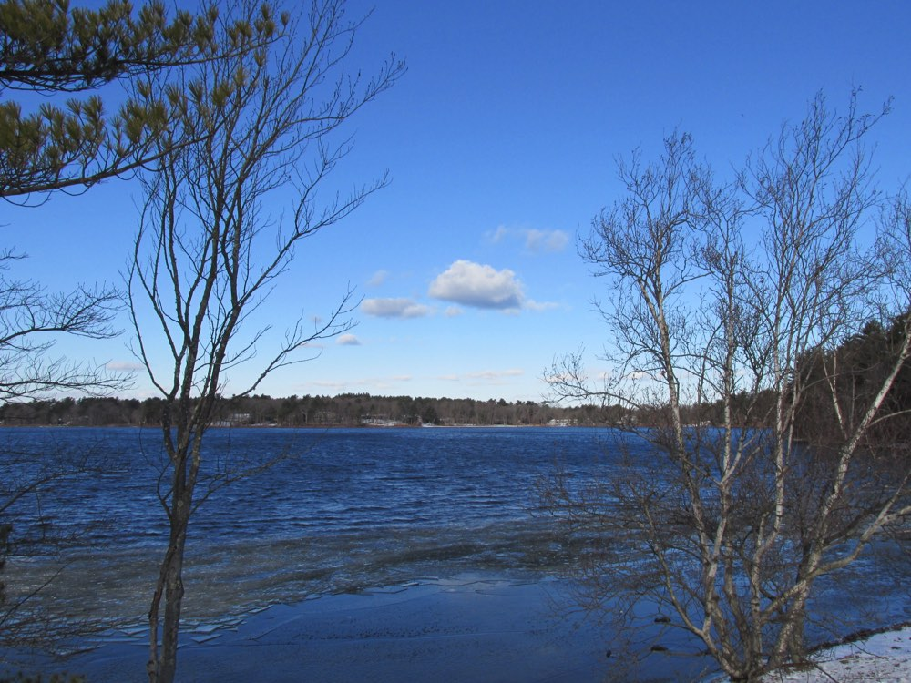
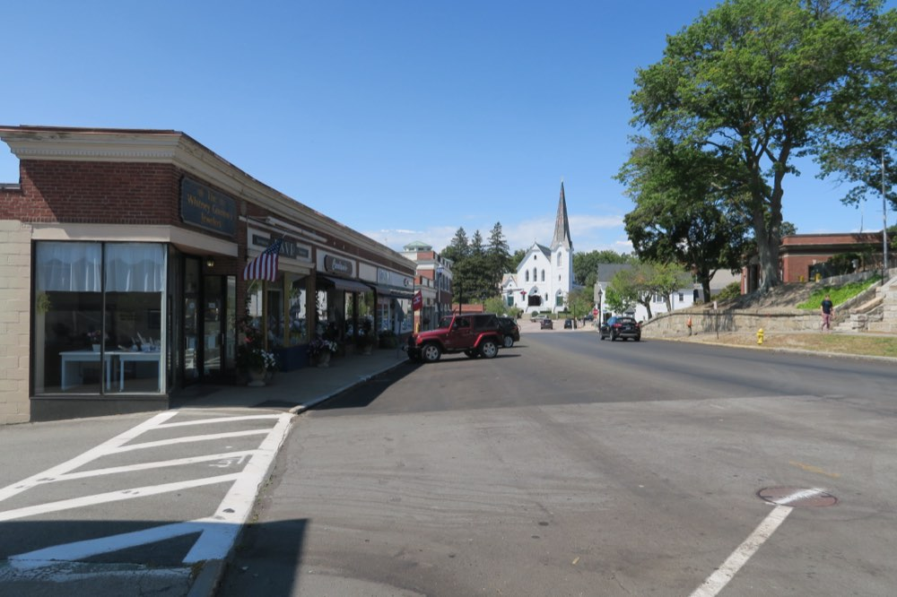

Independent community water quality initiative
We track federal EPA testing data for the Weir River Water System and help Hingham families understand what's really coming out of the tap — in plain language, sourced from public records.
Hingham's water is supplied by the Weir River Water System, drawing from Accord Pond and eleven groundwater wells across the Weir Watershed. EPA's Fifth Unregulated Contaminant Monitoring Rule (UCMR5), run between 2023 and 2025, found five PFAS "forever chemical" compounds in the system's testing results.
None of this represents an EPA violation — the utility remains within its legal limits. But one of the compounds detected, PFOA, was measured above the EPA's own individual health-based limit for that chemical.
| Compound | Detected level | EPA limit (individual) |
|---|---|---|
| PFOA | 5.7 ppt | 4 ppt |
| PFBA | 5.7 ppt | — |
| PFBS | 3.3 ppt | — |
| PFPeA | 3.1 ppt | — |
| PFHxA | 3.1 ppt | — |
Source: EPA UCMR5 occurrence data, 2023–2025. See the full breakdown and methodology on the Water data page.


Hingham Water Watch is a volunteer-run initiative started by residents who wanted a plain-language, independent source for what federal and local testing actually shows about the town's water supply — separate from the utility's own reporting.
We read the Consumer Confidence Reports so you don't have to, track new EPA monitoring data as it's published, and help neighbors figure out whether their household should be doing anything differently.
Request a free in-home water test and a volunteer will follow up to walk through what your results mean.
Get a free water test